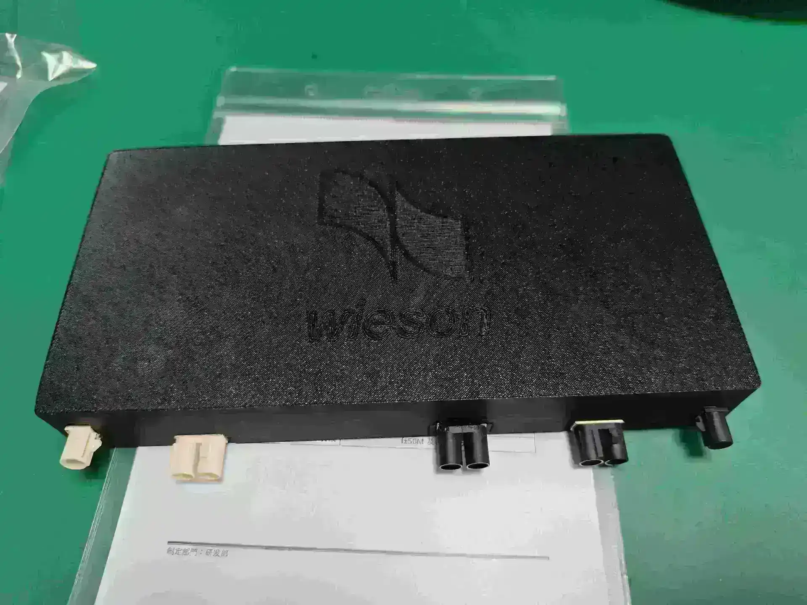
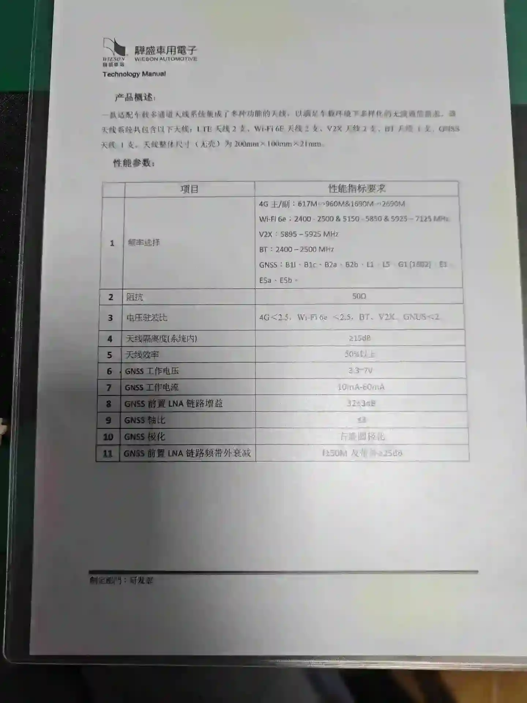
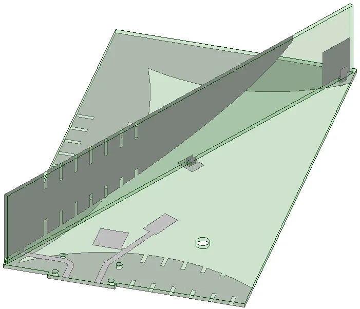
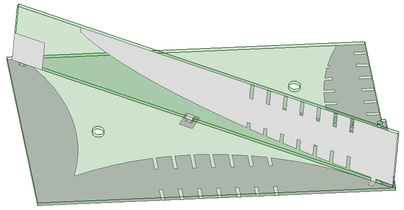
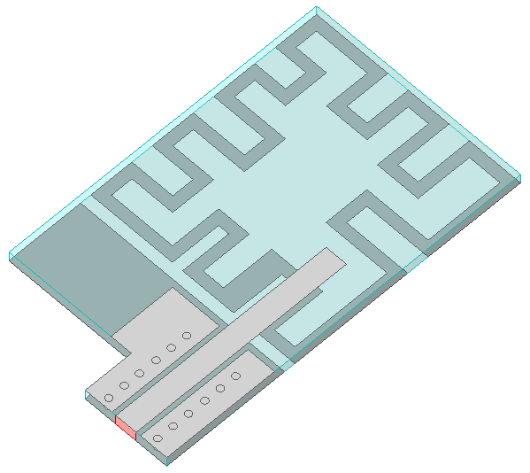
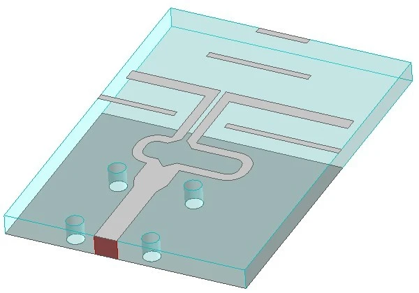

板端接口式集成定位与通信多通道车载天线盒
与 P-02 同一功能集的第二种工程形态：把射频接口从壳体侧壁迁到 PCB 板端， 五路馈电在同一块板上重排，用全印刷工艺取代盒内同轴尾线，换来整车装配上的一次对位固定。
项目概述/ Overview
接口位置一挪，天线盒就从「带尾线的盒子」变成「板上的部件」，收益与代价都落在内部布局里。
为车载天线盒产品设计的板端接口款式，功能集与 P-02 一致 —— 定位与通信多通道合于一盒； 差别只在射频输出端口与安装基准的位置。该方案是同一横向课题方向上的第二次工程化， 也是 2025.03 – 2025.09 在江苏骅盛车用电子担任射频工程师实习期间的产出， 技术方案形成发明专利申请「一种多通道车载天线盒」（申请号 CN202511158479.6）。
壳体侧接口靠盒外线束对接，整箱作为一个独立部件装车；板端接口让天线盒直接落到板端的射频口上 —— 省掉盒外同轴尾线、壳体开孔与密封件，产线上的装配动作从逐个插拔连接器变成 一次对位固定。这正是整车厂在意的便利性，也是本项目立项的目的。
收益不是白拿的。端口集中到板端一条边之后，五路馈电路径不再能从壳壁向盒内辐射展开， 只能在同一块 PCB 上重新排布；连接器的接地参考也从壳壁转移到板的接地层， 回流路径变短但必须用地孔阵列重新接续。通道间隔离因此不能只靠拉开辐射单元间距， 而主要由布线顺序与接地结构决定 —— 本页给出的 ≥ 14 dB 是这一版形态下的通道隔离值。
与 P-02 的分工
- P-02 · 壳体侧接口 —— 端口出壳壁，馈电路径短、连接器反力由壳体承担，整箱作为部件装车。
- P-03 · 板端接口（本页） —— 端口与安装基准合并到 PCB 一侧，免尾线与开孔密封，代价是通道重排与板端补强。
除方案本身，实习期内完成了多通道天线性能测试与数据分析，协同结构团队处理装配与工程集成问题， 并撰写设计文档、测试报告及专利申请文件。本页「验证状态」一栏对应的就是这条工作链； 原始资料未给出的测试条件与分项数据，不在本页补。
技术规格/ Specifications
四项数值为原始交付口径，其余按定性条目列出 —— 未取得的数字不在本页编造。
- 接口形式
- 板端接口射频端口出自 PCB 一侧
- 通道构成
- 4G LTE · Wi-Fi 6E · BT · V2X · GNSS五类系统合一盒
- 辐射与馈电工艺
- 全印刷 PCB盒内无同轴飞线
- 装配方式
- 盒体与板端一次对位固定免逐端口插拔
- 外形尺寸
- 200 × 100 × 25 mm
- 通道间隔离
- ≥ 14 dB同盒多通道
- 天线效率
- > 50%整盒口径，未分频段拆分
- VSWR
- < 2整盒口径，未分端口拆分
- 极化
- GNSS 圆极化 · 通信线极化沿承 P-02 方案
- 验证状态
- S 参数与暗室测试产出设计文档与测试报告
口径说明：原始资料只给了尺寸、隔离度、效率、驻波四项数值，此处原样保留，未改写也未追加。 逐通道增益与带宽、端口隔离矩阵、各系统频段边界、工作温度与车规环境试验数据原始资料未提供，故不列。
技术方案/ Approach
每条都写清为什么这么做，以及代价落在哪里。
- 接口从壳壁搬到板端 —— 为的是产线装配：整箱对位一次固定即可，省掉盒外尾线、壳体开孔与密封件；代价是连接器反力落到 PCB，接口区需要补强与定位基准，这部分与结构团队共同确定。
- 五路馈电在单板上重排 —— 端口成排后，长波长的 4G LTE 通路与约 5.9 GHz 的 V2X、6 GHz 的 Wi-Fi 6E 通路无法各自径向展开；按单元占位与馈电长度重新分配位置，并优先给 GNSS 接收通路让开发射通路的净距。
- 隔离靠接地与布线顺序，而非拉开间距 —— 盒体尺寸固定、端口同边布置，间距收益有限；以分层接地、地孔围挡与馈线净距压制互耦，本形态下通道隔离做到 ≥ 14 dB。
- 全印刷 PCB，取消盒内同轴飞线 —— 让一致性来自板厂工艺而不是手工焊接：无尾线即无焊点离散度与节拍波动，成本随批量下降；物理代价是 6 GHz 附近走线损耗高于同轴，需要在通路长度与线宽上收敛。
- 接地参考随接口一起迁移 —— 板端接口的回流参考是板的接地层而非壳壁，用密集过孔把连接器地、PCB 地层与盒体金属件接续起来，保持回流路径最短；这一步不做实，上面三条隔离结论都不成立。
- 验证按判据倒排 —— 回损与通道隔离用矢量网络分析仪逐端口扫测，方向图与效率进微波暗室，数据统一整理为测试报告；效率与驻波按整盒口径判定，不逐通道另立标准。
项目图档/ Figures
点击放大，滚轮缩放、拖拽平移，方向键翻页。






FIG 01
GNSS 通道与整盒接地结构未随原始资料提供图片，故图档只有以上 6 张。
项目成果/ Outcomes
改版是否值得，看的是便利性与射频指标是否同时守住。
4G LTE / Wi-Fi 6E / BT / V2X / GNSS 共口径紧凑布局，占用空间小。
端口同边布置下由布线与接地达成，通道互扰控制在全盒可用范围。
免盒外尾线与逐端口插拔，直接装车，安装稳定性提升。
无同轴飞线，成本与一致性来自板厂工艺，量产一致性好。
交付与知识产权
关联：P-02 · 壳体侧接口款（同功能集） · 工作经历 · 江苏骅盛 · 论文与专利